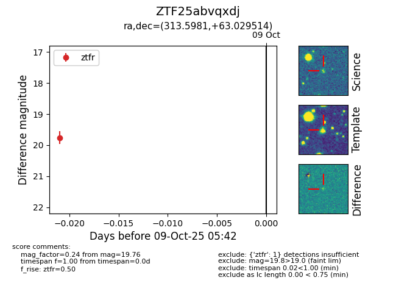

FINK: ZTF25abvqxdj
Lasair: ZTF25abvqxdj
ALeRCE: ZTF25abvqxdj
ZTF25abvqxdj (ztf,fink)
equatorial (ra, dec) = (313.5981,+63.02951)
galactic (l, b) = (99.4875,+11.54180)

last ztfr=19.76
1 ztfr detections